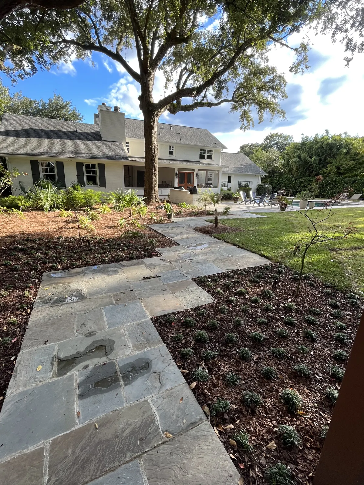

Landscape Design & Installation in Charleston, SC

Landscape Design and Installation Landscaping That Matches the House It Belongs To
The difference between a yard that looks designed and one that looks planted is not the budget. It is whether the landscaping suits the architecture, and whether the plants were chosen to grow together instead of fight each other.
Some yards want to be formal and sheared. Some want to be tropical. Some are really a garden. We build all three, and we start by looking at the house rather than at a plant list.
Doug Cramer has worked in landscaping his whole life, with more than 30 years of experience. His son Zach grew up here. They walk every property themselves, and the same company that designs your yard installs it — along with any patio, irrigation, drainage or lighting that goes with it.
What Landscaping Costs
Most people call without any idea what a yard should cost, so here is the honest range before you ask. These figures are for the planting itself.
| Plant beds | $1,000 – $2,000 |
|---|---|
| Front yard | $5,000 – $10,000 |
| Full house landscape | $20,000+ in plants |
Pricing varies a lot with the design, the number of plants and the size of the plants going in. A 30-gallon tree and a 3-gallon shrub are not the same job. Sod, irrigation, drainage, lighting and hardscape are quoted separately.
The size of the plants is the lever most homeowners do not know they have. Buying smaller and waiting two seasons is a legitimate way to get the design you want inside the budget you have, and we would rather stage a yard over a couple of years than talk you into a compromise you will look at every day.
On a large property the landscaping is not the cheap part of the job. A full landscape design and installation can cost as much as the hardscaping or the structures going in beside it, which is worth knowing when you are budgeting the whole yard rather than one piece of it.
Plan for What You Cannot Dig Up Later
Most yards happen in stages, which is sensible. The order matters, though, because a few things get very expensive once there is a patio sitting on top of them.
We run conduit, gas and water lines for future use before the hardscape goes down. An empty conduit under a new patio costs very little on the day it is laid. Getting one under an existing patio means cutting the patio up and relaying it.
Worth running while the ground is open:
- Conduit for lighting out to trees, beds and the far side of the yard.
- A gas line to wherever a fire pit, grill or fireplace might eventually go.
- Water for a future outdoor kitchen sink, outdoor shower or irrigation zone.
- Sleeves under driveways and walkways, so irrigation and wiring can cross later without cutting concrete.
Tell us what the yard might become in five years and we will leave you able to do it.

How We Design It
The consultation at your home is free. We walk the property, talk about how you actually use the yard and what your budget is, then design to it. You get drawings, with 3D renderings as an option at additional cost when it helps you see it.
Two rules run through every design we do:
- We do not over plant. A bed stuffed to look finished on install day is a maintenance problem in three years, when everything in it is competing for the same space.
- We layer it correctly, so the landscape grows together instead of fighting itself — heights, textures and mature sizes planned as one picture.
If your neighborhood has an architectural review, we will prepare and submit the HOA application for you.
Plants That Work Here, and the Ones That Do Not
The Lowcountry lets us plant things most of the country cannot, and punishes a few choices badly. Japanese maples for a shady garden. Camellias for real color in winter. Podocarpus, ligustrum and sweet viburnum for hedging, boxwood where the look is formal. Palms of every kind, from lady palm and windmill to saw palmetto and coontie, each with its own sun, shade and frost tolerance. Live oaks, bald cypress, magnolia, holly and crape myrtle for trees.
We do not use sago palms.
The full palette, what goes in sun against shade, and where frost damage catches people out, is on our plants and trees page.

New Construction and the Builder Package
If your house is new, the landscaping that came with it is the cheapest thing the builder could put in and still hand over the keys. What we find, over and over: poor quality plants, planted in the wrong locations, with no clear style or direction holding any of it together.
That is worth knowing before you spend money filling in around it. Often the right first move is to decide what the yard is supposed to look like, keep whatever genuinely works, and redo the rest properly rather than adding more of the same.
When to Plant in Charleston
South Carolina is generous about this: turf and plants can go in all year round. Certain trees and plants have a preferred season, and we will tell you when waiting is genuinely better.
The hardest window is mid-summer, purely because of the heat and what it demands in watering. That is a reason to plan for irrigation, not a reason to cancel a summer install.
The Plant Warranty
Our 1-year plant warranty covers replacement of the plant and the labor to put it in. Two things are not covered: plants without an automatic watering system, and losses to acts of weather. That first condition is the one to pay attention to — hand watering is where most new plantings die, and it is why we would rather install irrigation with a planting than warranty a yard without it.
How the Work Goes
- Free consultation at your home around Charleston, Mount Pleasant and Summerville. How you use the yard, what you like, and a realistic budget.
- Design. Drawings, with optional 3D renderings at additional cost, matched to the architecture of the house.
- HOA submission where it applies. We prepare and submit it.
- Prep first. Grading, drainage and irrigation go in before planting, because they are the things nobody can fix afterwards without digging the yard up again.
- Planting and finishing. Trees and larger material first, then shrubs, ground cover and mulch and bed edging.
Landscaping is usually part of a bigger picture: sod, artificial turf, landscape lighting, water features and the hardscape the planting frames.
Serving the Greater Charleston Area
Cramers Landscaping provides landscape installation services throughout Charleston County and nearby areas, including:
We tailor every design to the terrain, microclimate, and architectural character of the area.
Works Well With These Services
Landscape installation is often the first step in a larger outdoor plan. Many of our clients combine it with:- Hardscape Installation: patios, retaining walls, and walkways
- Irrigation Installation: for efficient, automated watering
- Drainage & Grading: to ensure proper runoff and prevent pooling
- Landscape Enhancements: lighting, seasonal color, and design upgrades
If you’re planning a full outdoor transformation, ask about our bundled service packages.
Projects We’ve Built
Real jobs, with the story of how each one came together.


Frequently Asked Questions
How much does landscaping cost in Charleston?
Plant beds generally run $1,000 to $2,000, a front yard $5,000 to $10,000, and a full house landscape $20,000 or more in plants. It varies a lot with the design, how many plants go in and what size they are. Sod, irrigation, drainage, lighting and hardscape are quoted separately.
Do you charge for landscape design?
The consultation at your home is free, and a job that does not need a design, or where a quick drawing will do, is not charged for one. A larger project with a full drawn design carries a design fee, and what it comes to depends on the job. 3D renderings are available as an option at additional cost.
What is covered by your plant warranty?
The 1-year plant warranty covers replacement of the plant and the labor to install it. It does not apply if there is no automatic watering system, or if the plant is lost to acts of weather.
When is the best time to plant in South Carolina?
Turf and plants can go in all year round here, though certain trees and plants have their own preferred season. Mid-summer is the hardest window because of the heat and the watering it demands.
What is wrong with the landscaping that came with my new house?
Typical builder packages use poor quality plants, put them in the wrong locations, and have no clear style or direction. It is usually better to decide what the yard should be, keep what genuinely works and redo the rest, rather than adding more of the same.
Do you do the hardscaping and irrigation too, or just plants?
All of it, with our own crews. Grading, drainage and irrigation go in before planting, and patios, lighting and structures are handled by the same company, so nothing gets blamed on another trade.
Request a Free Landscape Consultation
Ready to bring your outdoor space to life? The team at Cramers Landscaping is here to guide you from concept to completion. Whether you’re planting for beauty, privacy, or sustainability, we’ll help you make the most of your property.
Contact us to schedule a free consultation and see why we're Charleston’s trusted name for landscape installation.